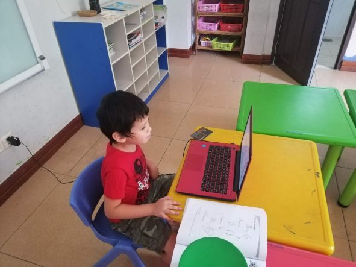

I received a Master of Educational Technoloy from Boise State University in 2020, along with a School Technology Coordinator Graduate Certificate. The online, asynchronous format made it possible to complete my degree while living and working in Asia. I chose the EdTech at Boise State because of my interest in using technology to improve learning outcomes and access to education, worldwide. I had limited exposure to edtech tools and theories before starting this program, but I could see the potential that technology had to improve learning. I wanted to be a part of that movement.
The program introduced me to topics and challenges related to eductional technology in EdTech 501. EdTech 502 introduced me to web development, as we learned how to created educational websites using HTML and CSS. I learned about instrcutional design in EdTech 503. We learning about current instrcutional design theories and frameworks. I created an instrcutional design project to train teachers on how to modify their lessons to adjust for the learners' skill level. I defined the audience, conducted a needs analysis, defined the objectives, developed the materials and created an evaluation plan. The next course I took was EdTech 551 where I learned about grant writing. I wrote a grant proposal for a reading app for young learners in China, to imporve the English level of students in rural areas.
In EdTech 504, I worte a research paper arguing that the Cultural-Historical Activity Theory could be used a a guide when planning the implementation of new educational technology programs. In Edtech 534, I planned, designed and created a mobile application to help young learers to develop their reading skills. In EdTech 552, I learned about the basics of network administration. I developed and created a short, interactive course on Map Reading in EdTech 511. In EdTech 554, I created several projects related to implementing technology programs in Schools. I created a portfolio of the work that I created in the program in EdTech 592.
 My son, David studying online during COVID. I developed the online learning program at the school I worked during COVID, where he was a student. I used the knowledge and skills I gained in at Boise State to develop this program.
The knowledge and experience that I gained from this program will benefit me for the rest of my life. It taught me about instrcutional design and how to use technology to improve learning. I was able to use what I learned in this program to create an online program for my school in response to COVID-19. I am using what I learned in this program in my current job as an instructional technologist. This program made me even more passionate about education and technology, and how they can be used together to improve the world.
| Course ID | Course Name | Credits | Term | Grade |
|---|